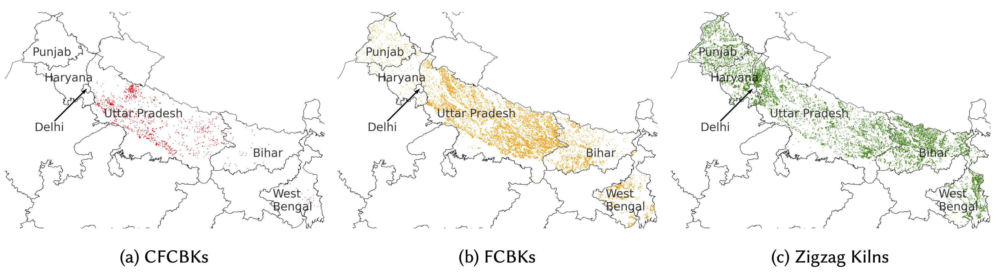
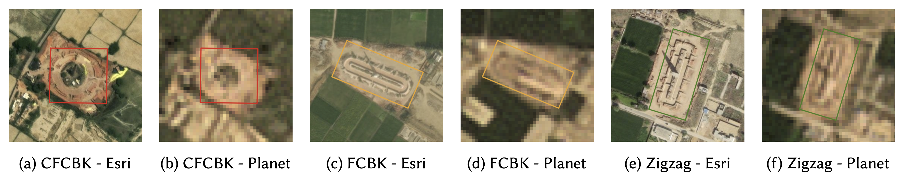
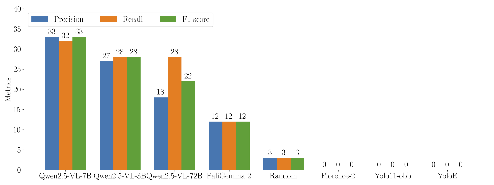
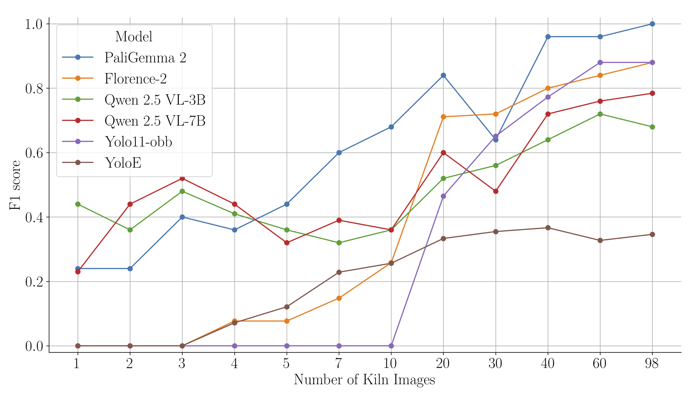
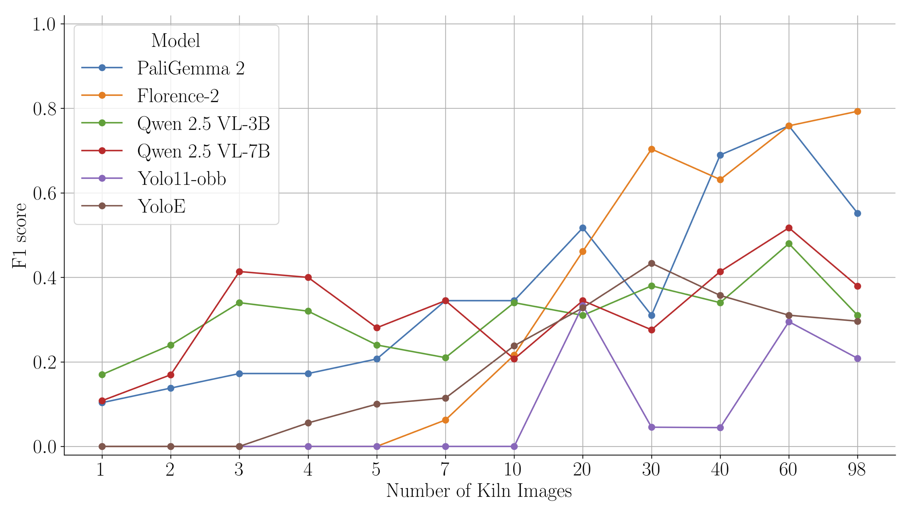
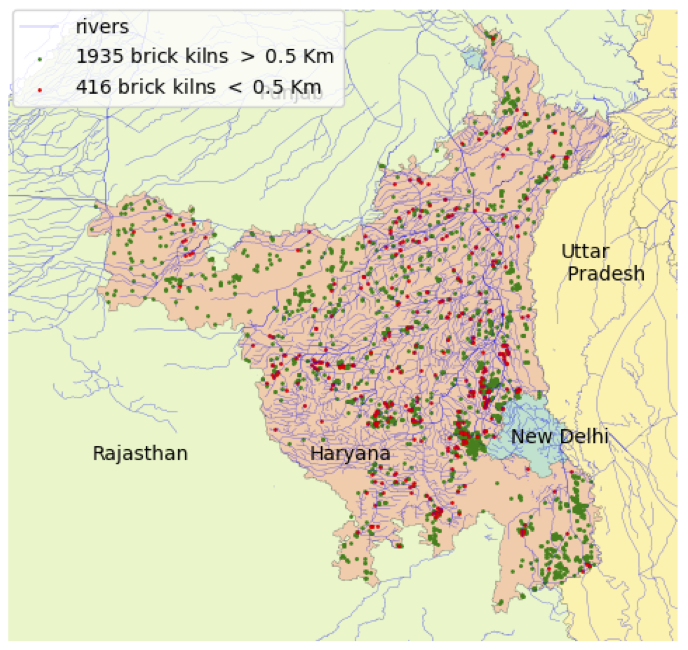

Air pollution is one of the most pressing environmental challenges of our time, responsible for an estimated seven million deaths globally each year. In India, which bears a staggering 22% of this burden, the sources of pollution are numerous and complex. While vehicle emissions and industrial output often grab headlines, a significant and often-underestimated contributor hides in plain sight across the countryside: the brick kiln.
The brick manufacturing industry accounts for a staggering 8-14% of all air pollution in the densely populated Indo-Gangetic plain. It’s an industry caught between two realities: it’s a vital engine of economic development, but also a major source of harmful emissions. For policymakers, regulating these thousands of small, scattered kilns is a monumental task. How can you enforce environmental policies if you don’t know where the polluters are?

Brick kiln locations across five states of the Indo-Gangetic Plain, India.A Crash Course in Brick Kilns
Before you can teach an AI to find a brick kiln, you need to understand what it’s looking for. A brick kiln isn’t just a single type of structure; the technology used has a direct impact on its environmental footprint. Our research focused on two predominant types in the Indo-Gangetic Plain:
- Fixed Chimney Bull’s Trench Kiln (FCBK): This is an older, less efficient technology. FCBKs often result in incomplete fuel combustion, releasing significant amounts of pollutants like particulate matter (PM) and carbon monoxide (CO).
- Zigzag Kilns: A more modern and energy-efficient design. The “zigzag” pattern of airflow allows for more complete combustion, reducing PM and CO emissions by as much as 60-70% compared to traditional kilns.
The Indian government has been actively pushing for the adoption of cleaner technologies like Zigzag kilns. Therefore, any effective monitoring system can’t just find kilns—it needs to be able to distinguish between them.

Satellite view of brick kilns with bounding boxes. CFCBK is Circular Fixed Chimney Bull’s Trench Kiln, and FCBK is Fixed Chimney Bull’s Trench Kiln.The Challenge: Why Old AI Methods Fall Short
The first approach to automating detection is to use traditional computer vision models. Our group’s previous work, detailed in “Eye in the Sky,” successfully used a YOLOv8 model to detect over 19,000 kilns.
This was a huge leap in scalability compared to manual annotation by experts, which would take years to cover the same area. However, this approach highlighted two fundamental limitations of traditional object detectors:
- The Data Bottleneck: Training a YOLO model requires a massive amount of labeled data. The group had to manually annotate thousands of kiln images to get the model to a reasonable accuracy. This is a significant upfront cost in time and resources.
- The Generalization Gap: A model trained exclusively on data from one region (e.g., Uttar Pradesh) performs poorly when tested on another (e.g., West Bengal). The subtle differences in terrain, soil color, and kiln construction styles can easily confuse a model that has only learned to recognize a specific set of pixel patterns.
We realized that to create a truly scalable and adaptable solution, we needed an AI that could learn the concept of a brick kiln, not just its appearance in one specific dataset.
The VLM Revolution: An AI That Sees and Understands
This is where Vision-Language Models (VLMs) enter the picture. VLMs like Microsoft’s Florence-2, Google’s PaliGemma, and Alibaba’s Qwen2.5-VL are pre-trained on an internet-scale dataset of images and text. This allows them to perform tasks based on natural language prompts, bridging the gap between seeing and reasoning.
Instead of just being a “kiln detector,” a VLM can be instructed with a prompt like detect a rectangular object with a chimney. This fundamental difference led us to our core hypothesis: Could the rich, contextual understanding of a VLM allow it to achieve high accuracy with far less task-specific training data?
We designed a series of experiments to find out.
Our Investigation: Putting Vision-Language Models to the Test
With our high-resolution GMS dataset in hand, we designed a series of experiments to rigorously evaluate how these powerful VLMs perform on a niche, real-world remote sensing task.
Question 1: Can VLMs Find a Brick Kiln Out of the Box?
First, we wanted to establish a baseline. Could a massive, pre-trained VLM identify a brick kiln with zero specific training on our data? This is known as zero-shot detection. We simply gave the models a satellite image and a text prompt, like detect brick kiln with chimney, and analyzed their responses.
The results were a fascinating mix of failure and promise. While no model performed exceptionally well, some clearly did better than others—and crucially, all performed better than random chance.

Zero Shot Performance of VLMs at IoU threshold 0.5 on the Lucknow region. The performance, while low, is notably better than random chance.This initial test gave us a key insight: VLMs are not magic wands. Their out-of-the-box performance is heavily dependent on whether concepts like “brick kiln” or “chimney” are well-represented in their original training data. However, the fact that they performed better than random guessing showed us there was a foundational understanding we could leverage and build upon.
Question 2: How Little Data is “Enough”? Fine-Tuning for Data Efficiency
This was the heart of our exploration. The biggest weakness of traditional models like YOLO is their need for vast amounts of data. Our hypothesis was that VLMs could overcome this. To test it, we fine-tuned the VLMs on progressively larger, yet still very small, sets of our labeled brick kiln images—starting with just one image and going up to about 100.
The results were the most exciting discovery of our research.

F1-score vs. number of training images. VLMs achieve strong performance with fewer than 20 images, while YOLO requires significantly more data to become competitive.The graph tells a clear story. With just a handful of examples, the VLMs rapidly learned to identify brick kilns with impressive accuracy. Florence-2 and PaliGemma 2 outperformed the specialized YOLOv11 model after seeing fewer than 20 training images.
This is a paradigm shift for specialized detection tasks. It suggests that for any niche problem where labeled data is the primary bottleneck—from tracking specific types of agricultural equipment to identifying informal settlements—VLMs can provide a shortcut to a high-performing model, drastically reducing the need for expensive and time-consuming data annotation.
This process is also surprisingly accessible. Using open-source tools like Maestro, launching a fine-tuning experiment can be defined in a simple configuration file.
# A conceptual look at launching a fine-tuning job with Maestro
from maestro.trainer.models.florence_2.core import train
# Define your model, dataset, and hyperparameters in a config
config = {
"model_id": "microsoft/Florence-2-large-ft",
"dataset": "/path/to/my_20_labeled_images", # Using a very small dataset
"epochs": 50,
"lr": 5.0e-6,
"batch_size": 2,
"optimization_strategy": "lora", # Efficiently fine-tunes only a small part of the model
"output_dir": "my_finetuned_brick_kiln_detector"
}
# And run!
train(config)Question 3: Does the Model Work Everywhere? Testing Generalization
An AI model is only truly useful if it can work on data it has never seen before. To test this, we took our fine-tuned models—trained exclusively on images from the Lucknow region—and evaluated them on a completely new dataset from West Bengal, a geographically distinct area.
This is where the conceptual understanding of VLMs truly stood out.

F1-score on the West Bengal region after fine-tuning VLMs on a small dataset from the Lucknow region.
The VLMs maintained a high level of performance, proving their ability to generalize. By learning from both images and the text prompt (“brick kiln with chimney”), they formed a more abstract concept of what a kiln is, making them less sensitive to superficial changes in the background terrain or soil color. The YOLO model, which learns only from pixel patterns, was more easily confused by these domain shifts.
From Pixels to Policy: Automating Compliance Checks
Detecting kilns is one thing, but the real-world impact comes from using that information to enforce environmental policies. Government regulations, for instance, mandate that brick kilns must be located a minimum distance away from sensitive areas like residential zones, hospitals, and rivers.
Manually checking compliance for thousands of kilns is nearly impossible. But with a comprehensive, geo-referenced dataset of kiln locations, we can automate this process entirely. As demonstrated in the “Eye in the Sky,” paper, the group integrated our detection data with other public datasets (like OpenStreetMap) to perform large-scale compliance analysis.

Automated compliance check for brick kilns near rivers in Haryana. The red dots indicate non-compliant kilns, providing a clear and actionable map for regulators.This framework provides a powerful tool for governments. Instead of relying on slow, expensive manual surveys, they can use an automated system to:
- Quickly identify non-compliant kilns across entire states.
- Monitor the adoption of cleaner technologies over time by classifying kiln types.
- Focus inspection and enforcement efforts where they are needed most.
Challenges and the Road Ahead
Our exploration, while promising, also highlighted key limitations and areas for future work. True scientific progress means being transparent about what we still don’t know.
- The “Empty Image” Problem: When shown an image with no brick kilns, our fine-tuned models sometimes had a tendency to “hallucinate” one. This is because their training focused on finding kilns, not on recognizing their absence. Our experiment with adding “negative samples” (background images) to the training data showed significant improvement, but it remains a key challenge for real-world deployment.
- Tiled Inference is Slow: While effective for large images, our SAHI-based tiling approach is computationally expensive. A single high-resolution image might be split into hundreds of patches, each requiring a separate model inference.
- Operational Status: Detecting a kiln is one thing; knowing if it’s currently operational is another. This is difficult with standard RGB imagery but could potentially be solved in the future with higher-resolution thermal satellite data.
Final Thoughts
Our journey from wrestling with massive datasets for YOLO to fine-tuning powerful VLMs with just a handful of images was transformative. It showcased a fundamental shift in how we can approach specialized computer vision problems.
The key takeaway is this: for niche tasks where data is the bottleneck, Vision-Language Models offer a path to building effective, generalizable, and data-efficient AI systems. They lower the barrier to entry for tackling critical, real-world problems.
While our focus was on brick kilns, the methodology applies broadly. From monitoring illegal mining and tracking deforestation to assessing agricultural health, the ability to rapidly fine-tune an AI model that understands both “what to look for” and “what it looks like” is a powerful new tool in our arsenal for protecting our planet.
This research was a collaborative effort. To dive deeper into the methodology, check out the full code on our GitHub Repository and the papers, “Eye in the Sky” and “Space to Policy”.